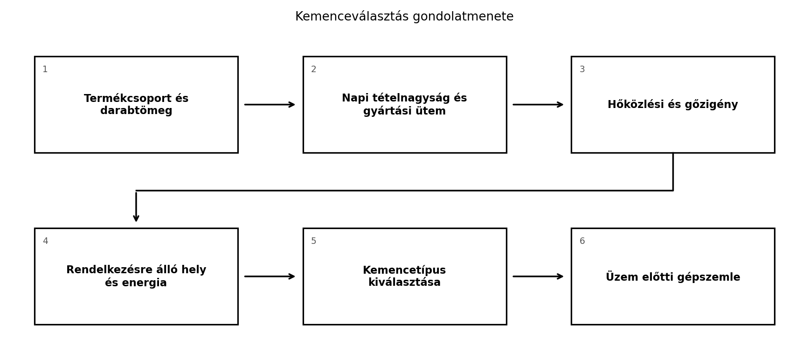

A pékségben a kemence nem egyszerűen egy fűtött doboz: az adott termék tésztája, mérete, elvárt héja, béle és a napi tételnagyság együtt határozza meg, hogy melyik kemencetípus a jó választás. Ugyanaz a jól megkelt vizes tészta egészen más kenyeret ad egy boltozatos magyar kemencében, mint egy gyors felfűtésű, gőzölős forgóállványos kemencében. Ebben az alfejezetben a kemencéket nem az energiafajta, hanem a felépítésük és üzemmódjuk szerint tekintjük át: épített és szerelt kemencék, kiskemencék, folyamatos üzemű sütőberendezések, forgóállványos és konvekciós sütők.
A kemenceválasztást legegyszerűbben egy üzemi döntési lánccal lehet átgondolni. Először a terméket és a tételnagyságot, utána a hőközlési és gőzigényt, majd a hely- és energiaadottságokat kell tisztázni.

A lánc utolsó lépése azért fontos, mert a legjobban megválasztott kemence is balesetet vagy hibás terméket okozhat, ha a védőberendezéseit, az égőit, a hőmérséklet-érzékelőit és az ajtótömítéseit nem ellenőrzik használat előtt.
Definíció. Épített kemencének nevezzük azt a sütőberendezést, amelynek sütőterét és hőtároló tömegét túlnyomórészt tégla, kő, samott vagy más épített kerámia anyag alkotja, nem pedig acéllemez-szerkezet. Az épített kemencék jellemzője a nagy hőtehetetlenség: lassan melegszenek fel, de a tárolt hőt hosszan, egyenletesen adják le.
Felépítés és működési elv. A hagyományos magyar kemence boltozatos, jellemzően téglából és samottból falazott sütőtér. A tüzelés gyakran közvetlenül a sütőtérben történik: a fát vagy más tüzelőanyagot a sütőtérben elégetik, a boltozat és a falak felmelegszenek, hőt tárolnak. Sütés előtt a parazsat és a hamut kihúzzák, a sütőteret letisztítják, majd a megkelt tésztákat vetik be. A sütés itt döntően tárolt hővel történik, nem folyamatos tüzeléssel. Ezért a vetés után a hőmérséklet fokozatosan csökken, a pék a tapasztalata alapján időzíti a termékek sorrendjét.
A magyar kemence jellemző termékei a nagy, erősen felülsült héjú kenyerek, a lepények és a hagyományos, kézműves pékáruk. A hőmérséklet-szabályozás itt kevésbé automatikus: a sütőtér hőmérsékletét gyakran hőmérővel, illetve a tapasztalt pék a vetési próbával, a felülsült héj színével és a sütési idővel együtt ellenőrzi.
Gépbiztonság. A magyar kemence sütőtere forró, a tüzelés és a hamukihúzás során égési és szikra okozta tűzveszély van. A kezelő hosszú szárú szerszámokat, hőálló kesztyűt és zárt, nem gyúlékony ruházatot használjon. Tilos: a forró sütőtérbe védőfelszerelés nélkül benyúlni, és tilos a tüzelőtér körül gyúlékony anyagot, lisztport, olajat tárolni.
Definíció. A gőzcsöves kemence szintén épített, de fűtési rendszere különbözik: hőközlő elemei zárt, részben vízzel töltött acélcsövek; a tűztérbe nyúló végükön a víz elpárolog, a sütőtér felőli szakaszon a gőz lecsapódva adja le hőjét, a kondenzátum visszafolyik (ellenőrizendő: gyártói leírás, a konkrét konstrukció). A sütőtér így egyenletesebb hőmérsékletű, mint a nyílt tüzelésű magyar kemencében.
Fontos pontatlanul értelmezhető fogalom: a gőzcsöves kemence nem a sütőtérbe adagolt felületi gőzről kapta a nevét, hanem a fűtőközegként használt, zárt csövekben lévő gőzről. A termék héjának kialakításához szükséges sütőtéri gőzt ebbe a kemencébe is külön juttatják be, ha a konstrukció ezt lehetővé teszi.
Gépbiztonság. A zárt csövekben nagy nyomás van; a tűztér hőmérsékletét a gyártói határ fölé emelni, sérült, deformált csővel üzemeltetni tilos. A csövek és a tűztér ellenőrzése a gyártó és a nyomástartó berendezésekre vonatkozó előírás szerint szakember feladata (ellenőrizendő: gépkönyv, nyomástartó berendezésekre vonatkozó előírások). Tilos: a csőrendszert péknek, tanulónak megbontani, védelmet kiiktatni vagy a rendszert szakember nélkül karbantartani. A sütőtér ajtaját csak óvatosan, a kiáramló gőztől védve szabad nyitni.
Definíció. A szerelt fémszerkezetű kemencék acéllemezből készült, hőszigetelt, modulárisan gyártható berendezések. A több sütőteres kiskemence – közkeletű ipari nevén etázs- vagy polcos kemence – több, egymás fölött elhelyezkedő, külön ajtóval ellátott sütőteret tartalmaz. Minden sütőtér saját fűtéssel, hőmérséklet-szabályozással és rendszerint gőzadagolással rendelkezik. A sütőfelület gyakran kőlap, platni vagy acéllemez.
Felépítés és működési elv. A kiskemence sütőtereit kézi vetéssel töltik meg: a pék szakajtóból, kelesztőlemezről vagy kocsiról juttatja a tésztát a sütőtérbe. A sütőterek külön-külön fűthetők, ezért eltérő hőmérsékletű termékek is süthetők párhuzamosan: például az egyik térben zsemle, a másikban kenyér. Ez a típus különösen jól illik kis és közepes pékségekhez, ahol a termékválaszték széles, de az egyes tételek nem túl nagyok.
Gépbiztonság. A sütőtér ajtaja, a platni és a gőzkivezetés forró. Az ajtót mindig lassan, a gőzt elengedve kell nyitni. A vetéshez hosszú szárú szerszám és hőálló kesztyű szükséges. Tilos: a futó fűtésű sütőtérbe nyúlni, a gázkeverőt vagy az elektromos fűtőtestet megbontani, és tilos a sütőtér ajtaját nyitva hagyva a kemencét felügyelet nélkül hagyni. A több sütőteres kemencét is csak betanítás után, felügyelettel kezelheti tanuló.
Továbbvitt eredmény. A több sütőteres kemence sütőterének egyedi hőmérséklet-szabályozása fontos a Vetési rendszerek, gőzfejlesztés és sütéstechnikai jellemzők alfejezetben tárgyalt vetési sorrend és gőzölési program megértéséhez.
Definíció. A szalagos kemence folyamatos üzemű, szerelt acélszerkezetű sütőberendezés, amelyben a tésztadarabokat egy folyamatosan mozgó szállítószalag viszi át a sütőtéren. A szalag lehet acélháló, perforált lemez vagy tömör szalag, a terméktől függően. Az alagútkemence folyamatos üzemű kemence hosszú, zónákra osztott sütőtérrel; a terméket leggyakrabban acél- vagy hálószalag viszi (szalagos alagútkemence), régebbi vagy speciális kivitelben lemezes, kocsis vagy függőpályás szállítás. A sütési időt a szalag sebessége és az alagút hossza adja; a szalagos kemence tehát az alagútkemence leggyakoribb kiviteli formája.
Felépítés és működési elv. A szalagos és alagútkemencék sütőterét zónákra osztják. Az első zóna az előmelegítés, a középső zóna a fő sütés, az utolsó zóna a szárítás vagy a felületi szín kialakítása. Minden zónában külön szabályozhatják a hőmérsékletet, a légkeringetést és a gőzmennyiséget. A folyamatos üzem miatt ezek a kemencék nagy kapacitású, ipari pékségekben használatosak. A szalagos kemence előnye a kiszámítható, szakaszos vetés nélküli munkaritmus; a hosszabb sütőtér vastagabb, nagyobb tömegű termékek átsütését is lehetővé teszi.
Gépbiztonság. A mozgó szalag, a behúzó görgők és a hőkezelt felületek súlyos balesetet okozhatnak. A szalagos és alagútkemencéket védőburkolattal, reteszelt ajtókkal és vészleállítókkal kell felszerelni. Tilos: a futó szalagra támaszkodni, a szalagra tésztát kézzel ráigazítani, a reteszelt ajtót kinyitva a sütőtérbe nyúlni, és tilos a védőburkolatot üzem közben eltávolítani. Burkolatot bontani, tisztítani vagy beavatkozni csak leállított, áramtalanított, újraindítás ellen biztosított gépen, a mozgó részek teljes megállása után, és csak az arra kijelölt személy szabad.
Példa. Egy nagyüzemi pékség napi 20 000 darab zsemlét és 8 000 darab kenyeret süt. A szakaszos kiskemence itt nem lenne gazdaságos, mert a sok vetési ciklus munkaerő-igényes és hőmérséklet-ingadozást okoz. A szalagos kemence folyamatosan süt, a zónák hőmérséklete a zsemle és a kenyér igényeihez igazítható. Hosszú sütési idejű termékhez hosszabb alagút vagy lassabb szalag kell; a szállítás módja (hálószalag, lemezes, függőpályás) a terméktől függ.
Definíció. A forgóállványos kemence – idegen szóval rotációs kemence – szerelt fémszerkezetű, szakaszos üzemű sütőberendezés, amelyben a tálcákat, lemezeket hordozó állvány a sütés alatt lassan körbe forog. A forgó mozgás és a kényszerített légkeringés együtt egyenletesebbé teszi a hőátadást. A fűtés lehet gáz, elektromos vagy olaj, a légkeringést ventilátor, a gőzadagolást külön gőzfejlesztő biztosítja.
Felépítés és működési elv. A forgóállványos kemence egyszerre több tálcányi terméket süt. A sütőtérben elhelyezkedő állvány lassan forog, így a termékek nem fix helyzetben kapják a hőt. A ventilátor a forró levegőt áramoltatja, a gőz pedig a sütés első szakaszában a héj rugalmas nyitását, a felületi csillanást és a késleltetett kéregképződést segíti. A kemencét gyakran kenyerekhez, zsemlékhez, péksüteményekhez és kisebb finom pékárukhoz használják. A sütési hőmérséklet és idő jól programozható, a gőz- és légáramlás paraméterei jellemzően digitálisan állíthatók.
Az elektromos konvekciós sütő a forgóállványos kemencénél egyszerűbb felépítésű: elektromos fűtőszálak és ventilátor gondoskodik a hőről és a légkeringésről. A konvekciós (hőszállításos) sütő nem mindig rendelkezik gőzadagolással, és a sütőtér mérete gyakran kisebb. Elsősorban sütemények, leveles tészta, kisebb péksütemények, kuglóf, omlós és kevert tészták sütésére alkalmas. A nagyobb, gőzadagolással is rendelkező konvekciós sütők a kisebb kézműves pékségekben kenyérsütésre is használhatók.
Gépbiztonság. A forgóállványos kemencénél a legfontosabb, hogy az állvány forgása alatt a sütőtérbe nyúlni tilos. A tálcákat, formákat úgy kell rögzíteni, hogy forgás közben ne csússzanak el. A sütőteret nem szabad túltölteni, mert a tálcák közötti légrés megszűnik, és a termék egyenetlenül sül. A kemence ajtaja gyakran reteszelve van a forgó állvány működéséhez; a reteszelést áthidalni tilos. Tilos: a védőrács nélküli ventilátortérbe nyúlni, a gőzfejlesztőt szakember nélkül megbontani, és tilos a forró sütőteret felügyelet nélkül hagyni. Az elektromos konvekciós sütőnél a ventilátor védőrácsát és az elektromos csatlakozást kell ellenőrizni; tisztítás előtt a gépet le kell állítani és áramtalanítani kell.
HACCP. A CCP az átsültség (maghőmérséklet); a sütési hőmérséklet és idő ennek elérését szolgáló, dokumentált paraméter. A kemence hőmérsékletét, a sütési időt és a maghőmérsékletet a pékség HACCP-terve szerint kell mérni és dokumentálni (ellenőrizendő: a pékség HACCP-terve, hatósági útmutató). A forgóállványos kemencénél a hőmérséklet-érzékelő hibája vagy a túltöltés miatt a termék belső maghőmérséklete nem éri el a kívánt értéket, ezért a sütési tétel dokumentálása és a késztermék átsültségének ellenőrzése elengedhetetlen.
A tárgyalt kemencefajták felépítését és veszélyes pontjait az alábbi vázlat foglalja össze. A magyar kemencében (a) a tüzelés a boltozatos sütőtérben történik, a parazsat sütés előtt kihúzzák; a több sütőteres kemence (b) egymás feletti, külön ajtós, kőlapos sütőtereit külön fűtik és gőzölik; a forgóállványos kemencében (c) a forgatófej forgatja a tálcás állványt, a ventilátor a hőcserélőn át keringeti a levegőt, a gőzt külön gőzfejlesztő adja; az alagútkemencében (d) a szalag a gőzös vetési, a fő sütési és a színező zónán viszi át a terméket. A sárga háromszögek a veszélyes pontokat jelölik: forró sütőtér és szikra, gőzkiáramlás az ajtónyitáskor, a forgó állvány és a behúzó görgő.
A veszélyes pontokhoz a fenti Gépbiztonság. bekezdések szabályai tartoznak: a forgó állvány közé és a futó szalaghoz nyúlni tilos, a reteszelést áthidalni tilos, és a vészleállító csak megállít – beavatkozás előtt a kemencét le kell választani, ki kell hűlni hagyni és újraindítás ellen biztosítani. A HTML-kiadásban a kemencék lépésenként nagyíthatók, a veszélyjelekre mutatva a rövid biztonsági szabály jelenik meg.
Bármelyik kemencetípusról is legyen szó, a tanuló csak betanítás után, felügyelettel kezelheti. A biztonságos üzemeltetés lépései az üzem előtti szemlével kezdődnek:
Figyelem. A védőburkolat eltávolítása, a reteszelés áthidalása, a futó gépbe nyúlás és a biztonsági szelep kiiktatása tilos. Minden ilyen gyakorlat súlyos égési, zúzási, csonkolási vagy áramütéses balesetet okozhat.
Egy kis pékség napi 300 kg kenyérféleséget és 400 darab péksüteményt süt. A termékválaszték széles: fehér kenyér, rozsos kenyér, zsemle, kifli. A pék egyszerre legfeljebb 30–40 kenyérvetést tud elvégezni, és fontos számára, hogy az egyes termékeket eltérő hőmérsékleten süthesse. Erre a feladatra a több sütőteres kiskemence vagy a forgóállványos kemence a megfelelő. A több sütőteres kiskemence előnye, hogy a sütőterek külön-külön hőmérsékletre állíthatók, így a kenyér és a zsemle egymástól függetlenül süthető. A forgóállványos kemence akkor előnyösebb, ha a pék ugyanazon a hőmérsékleten nagyobb tálcamennyiséget akar sütni.
Továbbvitt eredmény. Az ilyen kapacitás- és termékszerkezeti megfontolások a Termelésszervezés, ütemidők és kapacitásszámítás alfejezetben számszerűen is megjelennek: ott a sütési ciklusidőből és a tálcakapacitásból számolunk.
Egy nagyobb üzem napi 10 000 kg lisztből dolgozó, folyamatos gyártást folytató pékség. A termékek nagy része zsemle, kifli, szeletelt kenyér. A szakaszos kemencék itt már nem adnak elegendő kapacitást, és a sok kézi vetés hibalehetőségeket, hőveszteséget okoz. A szalagos kemence folyamatosan fogadja a megkelt tésztadarabokat, a zónák hőmérséklete és gőzellátása az adott termékhez igazítható. Nagy vagy vastag termékhez hosszabb sütőtér vagy lassabb szalag szükséges, például nagy kenyérnél vagy tartós sütőipari terméknél.
Előírás. A kemence munkaeszköznek minősül, ezért a munkavédelmi törvény és a gépbiztonsági előírások szerint csak megfelelő műszaki állapotban, CE-jelöléssel és gépkönyvvel szabad üzemeltetni. A gyártói gépkönyv biztonsági és karbantartási utasításait a tanuló nem írhatja felül (ellenőrizendő: 2006/42/EK gépirányelv, az új gépekre vonatkozó uniós rendelet; 1993. évi XCIII. tv. a munkavédelemről). A gázüzemű kemencék égőit és gázfogyasztó készülékeit csak jogosult gázszerelő/gázkészülék-javító helyezheti üzembe és tarthatja karban, a gázszabályozás szerinti időszakos felülvizsgálattal (ellenőrizendő: a földgázellátásról szóló törvény és végrehajtási rendeletei). Az égéstermék-elvezetőt (kéményt) a kéményseprő-ipari közszolgáltató vizsgálja felül (ellenőrizendő: kéményseprő-ipari jogszabály). A tűzvédelmi követelmények az OTSZ-ben vannak (ellenőrizendő: hatályos OTSZ). A gőzcsőrendszerű épített kemencék nyomástartó részeire külön műszaki biztonsági előírások vonatkozhatnak (ellenőrizendő: nyomástartó berendezésekre vonatkozó előírások).
Egy közepes pékségben a tulajdonos forgóállványos kemencét vásárolt, mert szerette volna egyszerre több tálca zsemlét sütni. Az első időszakban azt tapasztalta, hogy az alsó tálcákon a zsemle túl sötét, a felsőkön viszont sápadt marad. A pék a kemence hőmérséklet-érzékelőjét ellenőrizte, és az rendben volt. A hiba oka az állvány túltöltése volt: a tálcákat túl közel helyezték el egymáshoz, így a forró levegő nem tudott megfelelően átáramolni. A megoldás a gépkönyvben ajánlott tálcaosztás betartása és a tálcánkénti termékszám csökkentése lett. A tanulság az, hogy a kemence teljesítményét nemcsak a hőmérséklet, hanem a betöltési mód is megszabja.
A kemence működésének minőségi jellemzőit a készterméken is ellenőrizni kell. Egyenletes a sütés, ha a tételben a termékek héjszíne, alakja és átsültsége egyenletes. A bél hőmérséklete a sütés végén, a középpontban mérve a termékre előírt értéket éri el (tanulási példa: kenyérnél jellemzően 96–98 °C, ellenőrizendő: üzemi technológiai lap). A hőmérséklet- és időnapló, valamint a gőzprogram ellenőrzése a HACCP dokumentáció része. A kemence ajtajának, tömítéseinek és hőmérséklet-érzékelőjének rendszeres ellenőrzése megelőzi a hőveszteségből származó minőségi hibákat.
1. feladat (A)
Sorolja fel az épített kemencék két fő típusát, és mondja el, mi a
legfontosabb különbség a fűtési rendszerükben.
2. feladat (A)
Mi a szerepe a forgóállványos kemencében a forgó állványnak és a
ventilátornak? Válaszát a hőátadás szempontjából fogalmazza meg.
3. feladat (B)
Egy kis pékség napi 400 kg kenyérféleséget és 600 darab péksüteményt
süt. A pék egyszerre legfeljebb 20 kg tésztát tud kézzel bevetni.
Válasszon kemencetípust, és indokolja a választást.
4. feladat (B)
Hasonlítsa össze a hálószalagos és a lemezes (függőpályás)
alagútkemencét: miben más a termék továbbítása, a sütési idő és a
jellemző termékkör?
5. feladat (C)
Egy szalagos kemencében a középső sütési zóna hőmérséklete a kívánt
érték alá csökken. Elemezze a lehetséges okokat, és írja le, milyen
HACCP-helyesbítő lépéseket tenne a sütés leállítása után.
6. feladat (D)
Egy forgóállványos kemencében a kiflik egy része sápadt, más része
túlsült. Sorolja fel a lehetséges okokat, és adja meg, milyen ellenőrző
mérésekkel különítené el a hőmérséklet-érzékelő hibáját a túltöltés
hibájától.
1. feladat (A)
Az épített kemencék két fő típusa: a magyar kemence és a gőzcsöves
kemence. A magyar kemence közvetlen tüzeléssel melegíti fel a sütőteret,
a hőt a falazott tömeg tárolja, és a tüzelőanyag elégetése után a
sütőtérben maradt hő süti a terméket. A gőzcsöves kemence fűtési
rendszere zárt gőzcsöveket használ: a tűztér hője a zárt rendszerben
lévő vizet gőzzé alakítja, a gőz csövekben kering, és leadja hőjét a
sütőtérnek. A különbség tehát a hőátadás módjában és a fűtőközegben
van.
2. feladat (A)
A forgóállványos kemencében a forgó állvány a tálcákat mozgatja, így a
termék nincs folyamatosan ugyanabban a pozícióban, és a sütőtér
hőmérsékleteloszlása egyenletesebben érvényesül. A ventilátor a forró
levegőt kényszeráramoltatja, ami a hőátadást a hővezetés és hőszállítás
kombinációjával javítja, ezért a termék gyorsabban és egyenletesebben
sül, mint álló levegőben.
3. feladat (B)
A kis pékség napi termékszámához és a kézi vetéshez a több sütőteres
kiskemence vagy a forgóállványos kemence illik. A több sütőteres
kiskemence azért jó, mert a sütőterek külön hőmérsékleten üzemelhetnek:
egyszerre süthető például kenyér és zsemle. A forgóállványos kemence
azért jó, mert egyszerre több tálcányi terméket süt, és a légkeringés
miatt a kisebb darabok is egyenletesen sülnek. A végső választás a
termékek pontos sütési hőmérsékletétől és a rendelkezésre álló helytől
függ.
4. feladat (B)
Az alagútkemence folyamatos üzemű, hosszú, zónás sütőterű kemence;
leggyakoribb kivitele a szalagos alagútkemence, ahol acél- vagy
hálószalag viszi a terméket, a sütési időt a szalag sebessége és a hossz
adja. A lemezes vagy függőpályás kivitel nagyobb, vastagabb termékekhez,
hosszabb sütési időhöz is használható. A hálószalagos változat jellemző
termékei a zsemle, kifli, kisebb kenyerek.
5. feladat (C)
A középső zóna hőmérséklet-csökkenésének lehetséges okai: az égő hibája,
gáznyomáscsökkenés, az érzékelő meghibásodása, a szellőző vagy a
füstgázelvezető eldugulása, illetve a szalag túlterhelése.
HACCP-szempontból a hőmérséklet-csökkenés műveleti eltérés, amely az
átsültség (CCP) elérését veszélyezteti, mert a termék átsültsége nem
garantálható. A helyesbítő lépés: a szalagot leállítani, a hibát
elhárítani, a gyanús terméket megjelölni, a sütési zóna hőmérsékletét
újra ellenőrizni, és a terméket csak akkor továbbítani, ha a zóna elérte
a technológiai lap szerinti hőmérsékletet. A mérést és a döntést a
HACCP-naplóban dokumentálni kell.
6. feladat (D)
A kiflik egyenetlen sülése több okból származhat: túltöltött állvány, a
tálcák nem megfelelő osztása, a ventilátor hibája, a sütőtér
hőmérséklet-érzékelőjének kalibrációs hibája, vagy a gőzadagolás
egyenetlensége. A hőmérséklet-érzékelő hibáját úgy lehet elválasztani a
túltöltéstől, hogy a sütőtérben több ponton, hordozható
hőmérsékletmérővel ellenőrzik a levegő hőmérsékletét. Ha a sütőtér
hőmérséklete egyenletes, akkor a hiba oka inkább a túltöltés; ha a
hőmérséklet térben egyenlőtlen, akkor az érzékelő vagy a légkeringés
hibáját kell keresni. A tálcakiosztás ellenőrzése, a gépkönyv szerinti
töltési minta és a hőmérséklet-érzékelő kalibrálása a hibafeltárás
része.
A kemencék felépítés szerint épített és szerelt csoportba sorolhatók. Az épített magyar kemence a tűztérben elégetett tüzelőanyag tárolt hőjét használja, míg a gőzcsöves kemence zárt gőzcsőrendszerrel adja át a hőt. A szerelt több sütőteres kiskemence külön szabályozható sütőtereket kínál kis és közepes tételekhez. Az alagútkemencék (leggyakrabban szalagosak) folyamatos üzeműek, zónás hőmérséklet- és gőzszabályozással, nagy kapacitású gyártáshoz. A forgóállványos kemence forgó állvánnyal és kényszeráramoltatott levegővel egyenletesíti a sütést; az elektromos konvekciós sütő kisebb tételhez, ventilátoros hőszállítással dolgozik. Minden kemencénél a védőburkolat, a reteszelés, a vészleállító és a leállított, áramtalanított gépen végzett tisztítás a biztonság alapja; a futó gépbe nyúlni és a védőberendezést kiiktatni tilos. Továbbvitt eredmény. Az itt tárgyalt szerkezeti és üzemeltetési különbségeket a Vetési rendszerek, gőzfejlesztés és sütéstechnikai jellemzők alfejezet a vetés, gőzölés és hőátadás szempontjából mélyíti el; a Mézes tészták sütése alfejezet a mézeskalács hőkezelési igénye miatt épít a kemence hőtároló képességére; a Termelésszervezés, ütemidők és kapacitásszámítás alfejezet pedig a sütési ciklusból és a betölthető tálcamennyiségből számol kapacitást.